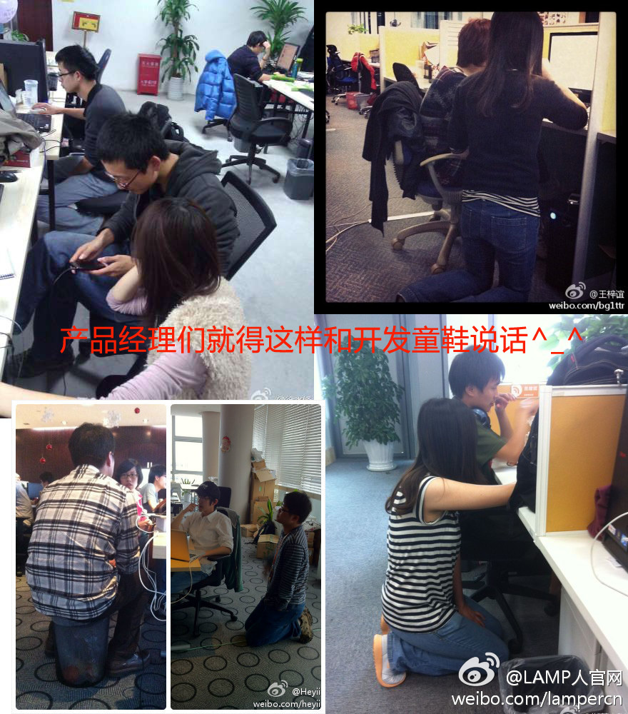

帮转。//@潘少宁_腾讯_LAMP人: @霍莹HONEYPM @舒剑 @灯塔_lighthouse @360陶伟华 @Ada李力 @黑夜路人V @梁斌penny @王紫上 求转发，求扩散！@LAMP人:来了来了，8月25日《技术、产品那点事儿》由技术童鞋来谈产品观、产品设计、产品艺术。懂产品的技术才是好CEO。本期分享主题《技术产品哪些事儿》《从冤家到搭档》《刚柔并济---技术人员的产品之路》《产品感悟》嘉宾有：@潘少宁_腾讯_LAMP人 @wx伍星 @胡嵩 @fengyuncrawl 报名：网页链接 

 网页链接
网页链接